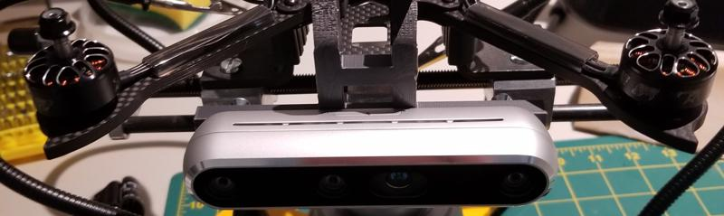

Hey, I'm John!
I am pursuing a BSE in Computer Engineering and MSE in Robotics at the University of Pennsylvania.
I have strong programming skills in Python, C/C++, Javascript, (and a variety of other languages),
and am particularly experienced with artificial intelligence & machine learning, computer vision,
full stack development, and embedded systems.
Work in autonomous vehicles is especially exciting to me—more specifically in planning and prediction.
I am currently searching for a Summer 2024 role.
HEADCOUNT
Python / PyTorch
Implemented Fast R-CNN with PyTorch to improve fire safety in public buildings.
Provides detections of potential victims and accurate crowd headcounts within different parts of a building through an online dashboard built on Google Cloud,
ensuring more effective evacuations and improved firefighter response
Provides detections of potential victims and accurate crowd headcounts within different parts of a building through an online dashboard built on Google Cloud,
ensuring more effective evacuations and improved firefighter response

Python, PyTorch, Flask, Google Cloud, Raspberry Pi
DNN CAR
Python / Tensorflow
Created a neural network powered vehicle navigation system in Tensorflow, designed to make control predictions based on a low resolution image feed (from PiCam).
This model was deployed on a custom ~1/12 scale car, controlled by a Raspberry Pi.
This model was deployed on a custom ~1/12 scale car, controlled by a Raspberry Pi.
Python, Tensorflow, Keras, Raspberry Pi
SEARCH & RESCUE UAV
C++ / ROS
Designed a low-cost UAV platform with ROS for search and rescue assistance.
The system implements a 3DVFH* for SLAM, using this algorithm for obstacle avoidance and navigation of unmapped terrain.
This project was first simulated with Gazebo, and deployed on custom quadcopter hardware.
Vision sensors include an Intel Realsense D455 camera for environment perception and mapping, and an Intel Realsense T265 camera for auxiliary localization when in unreliable GPS coverage.
The system implements a 3DVFH* for SLAM, using this algorithm for obstacle avoidance and navigation of unmapped terrain.
This project was first simulated with Gazebo, and deployed on custom quadcopter hardware.
Vision sensors include an Intel Realsense D455 camera for environment perception and mapping, and an Intel Realsense T265 camera for auxiliary localization when in unreliable GPS coverage.



C++, ROS, Gazebo, PX4, Intel Realsense
NEUROCAAS
Python / AWS
NeuroCAAS is an open-source scientific resource that uses cloud resources to run powerful modern data analyses.
NeuroCAAS packages these analyses into fully portable descriptions called blueprints, which can then be deployed to analyze data on demand and automatically.
Developed by the Cunningham Group at Columbia University, my primary contributions involved the following:
- Developed the full stack web interface of NeuroCAAS, an online neuroscience analysis platform, using Python (Django), AWS (EC2, S3, IAM, CloudFormation, STS), and Javascript
- Created an identity and access management system to support thousands of users and research groups
- Improved user deployment time from days to seconds by automating AWS resource deployment and optimizing backend performance; implemented a CI pipeline and wrote tests with 90% coverage
- Integrated research team’s IaC codebase for analyses; streamlined execution of 20+ detection, tracking, deep learning, and other algorithms by adding new features such as an embedded configuration templates
Publication: T. Abe, I. Kinsella, S. Saxena, E. K. Buchanan, J. Couto, J. Briggs, S. L. Kitt, R. Glassman, J. Zhou, L. Paninski, J. P. Cunningham, "Neuroscience Cloud Analysis As a Service: An open-source platform for scalable, reproducible data analysis." Neuron, Volume 110, Issue 17, 2022, https://doi.org/10.1016/j.neuron.2022.06.018.
NeuroCAAS packages these analyses into fully portable descriptions called blueprints, which can then be deployed to analyze data on demand and automatically.
Developed by the Cunningham Group at Columbia University, my primary contributions involved the following:
- Developed the full stack web interface of NeuroCAAS, an online neuroscience analysis platform, using Python (Django), AWS (EC2, S3, IAM, CloudFormation, STS), and Javascript
- Created an identity and access management system to support thousands of users and research groups
- Improved user deployment time from days to seconds by automating AWS resource deployment and optimizing backend performance; implemented a CI pipeline and wrote tests with 90% coverage
- Integrated research team’s IaC codebase for analyses; streamlined execution of 20+ detection, tracking, deep learning, and other algorithms by adding new features such as an embedded configuration templates
Publication: T. Abe, I. Kinsella, S. Saxena, E. K. Buchanan, J. Couto, J. Briggs, S. L. Kitt, R. Glassman, J. Zhou, L. Paninski, J. P. Cunningham, "Neuroscience Cloud Analysis As a Service: An open-source platform for scalable, reproducible data analysis." Neuron, Volume 110, Issue 17, 2022, https://doi.org/10.1016/j.neuron.2022.06.018.

Python, Django, AWS (EC2, S3, IAM, CloudFormation), Javascript, HTML5/CSS
PENNAPPS MUSIC APP
Javascript / React Native
Built a MERN stack app for PennApps XXII: "... a novel music app intended to help address centralization in the music industry by directly connecting listeners and artists."
A full description is available on Devpost.
A full description is available on Devpost.